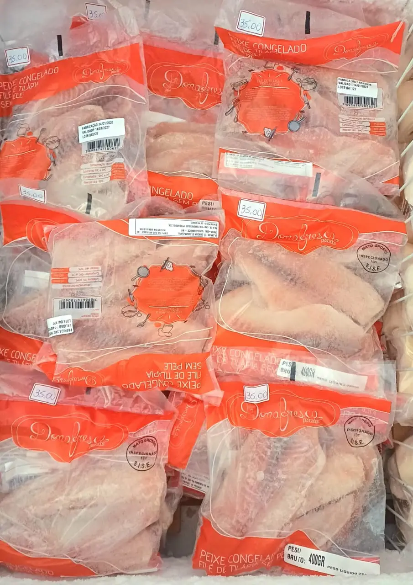

Tilápia Fresca
Oreochromis niloticus
Escolha o Corte:
Retire na loja: R. Bom Jardim, 379 — Centro, Cáceres.
Tilápia Fresca: O Peixe Mais Versátil da Peixaria Rio Paraguai
A Tilápia (Oreochromis niloticus) é o peixe de aquicultura mais consumido no Brasil e um dos mais populares do mundo — e as razões são muitas. Com carne branca, textura firme e sabor suave quase neutro, a tilápia é a escolha perfeita para quem busca praticidade na cozinha sem abrir mão da qualidade. Na Peixaria Rio Paraguai, trabalhamos com tilápia proveniente de tanques rastreáveis, criada em água limpa e controlada, sem off-flavors e com padrão de qualidade superior ao encontrado em versões ultraprocessadas e congeladas dos supermercados. Você recebe um peixe verdadeiramente fresco, com carne firme e brilhante que faz toda a diferença no prato final.
Inteira ou em Filé: Dois Cortes, Infinitas Possibilidades
A Tilápia inteira — limpa e escamada — é ideal para preparos no forno, na grelha ou frita: a pele crocante protege a carne durante o cozimento e entrega um resultado suculento por dentro e dourado por fora. Recheada com farofa de camarão ou legumes, vai ao forno como prato principal impactante. Já o filé de tilápia, sem espinhas e sem pele, é o corte mais prático do mercado: pronto para temperar e levar direto ao fogo sem nenhum preparo adicional. Por não ter espinhas, é a opção mais segura e recomendada para crianças, idosos e para quem não tem intimidade com o preparo de peixe inteiro.
Como Preparar a Tilápia: Dicas de Ouro
O filé de tilápia grelhado é uma das receitas mais rápidas e saudáveis possíveis: tempere com sal, limão e alho, aqueça uma frigideira antiaderente com um fio de azeite e grelhe por 3 a 4 minutos de cada lado até dourar. Em menos de 10 minutos você tem um prato completo. Empanada em farinha de trigo ou panko, a tilápia forma uma casquinha crocante irresistível — sirva com molho tártaro ou de iogurte com ervas. Para moquecas leves, o filé em cubos vai ao refogado de leite de coco, pimentões coloridos e coentro: o sabor suave da tilápia absorve todos os aromas do caldo sem perder a identidade. Inteira no forno com azeite, tomate-cereja, alho e ervas finas, ela fica pronta em 30 minutos com sabor de restaurante.
Tilápia de Qualidade Real em Cáceres-MT
A diferença entre uma tilápia de qualidade e uma mediana está no frescor e no manejo do tanque. Na Peixaria Rio Paraguai, selecionamos fornecedores que mantêm padrões rigorosos de qualidade da água, densidade de criação e alimentação balanceada — fatores que impactam diretamente no sabor e na textura da carne. O resultado é uma tilápia com carne branca, firme e sem odores indesejáveis que você só consegue em um produto genuinamente fresco. Disponível o ano inteiro, a tilápia é ideal para encomendas regulares semanais. Fale pelo WhatsApp e faça seu pedido.